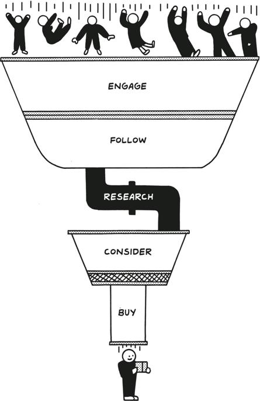

Congratulations! You have community, a product, and a hundred customers. That means you’ve arrived at product-market fit, which I define more specifically for minimalist businesses this way: repeat customers. Repeat customers mean that your business is able to persist without ongoing sales efforts so you can start to focus on scaling. First comes scaling your customer acquisition and sales strategy, then your company, then your ambition.
恭喜！你拥有了社区、产品和一百位客户。这意味着你已经达到了产品市场契合，我对极简主义企业的定义更具体：回头客。回头客意味着你的企业能够在没有持续销售努力的情况下生存，这样你就可以开始专注于扩展。首先是扩展你的客户获取和销售策略，然后是你的公司，最后是你的雄心。
So where does marketing fit in?
那么，营销在其中扮演什么角色？
Marketing is sales at scale. Remember that before we built a minimum viable product, we had a manual valuable process. And before you can have marketing, you need to sell to your first hundred customers; that’s because sales is the process upon which you build marketing. While sales is outbound and one-by-one, marketing is inbound and about attracting hundreds of potential customers at a time. Sales got you to one hundred customers. Marketing will get you to thousands.
营销是大规模的销售。记住，在我们构建最小可行产品之前，我们有一个手动的有价值的过程。在你能够进行营销之前，你需要先卖给你的前一百位客户；因为销售是你建立营销的基础。销售是外向的、一个接一个的，而营销是内向的，旨在同时吸引数百位潜在客户。销售让你达到了 100 位客户，营销将让你达到数千位。
But do not confuse marketing with advertising. Ads cost money, and minimalist entrepreneurs only spend money when we absolutely have to. We do cover ads later in this chapter, because they are a part of marketing, but in true minimalist fashion, we’ll start with the free stuff. Because it’s only once you’ve learned enough from sales—like you did with the manual process for your product—that you’re ready to spend money on marketing.
但不要将营销与广告混为一谈。广告是要花钱的，而极简主义企业家只有在绝对必要时才会花钱。我们会在本章后面讨论广告，因为它们是营销的一部分，但按照真正的极简主义方式，我们将从免费的东西开始。因为只有当你从销售中学到了足够的东西——就像你对产品的手动流程所做的那样——你才准备好在营销上花钱。
It’s much better to start by spending time instead of money. Blog posts are free. Twitter, Instagram, YouTube, and Clubhouse are free too. Instead of spending money, let’s start there, by building an audience.
最好先花时间而不是花钱。博客文章是免费的。Twitter、Instagram、YouTube 和 Clubhouse 也是免费的。与其花钱，不如从这里开始，通过建立受众群体。
The Power of an Audience
受众的力量
You started your business by tapping into a preexisting community, and now it’s time to move on to building an audience. What’s the difference?
你通过利用一个现有的社区开始了你的业务，现在是时候转向建立一个受众群体了。有什么区别呢？
While your community is a part of your audience, your audience is not a part of your community. Instead, an audience is a network of everyone you can reach when you have something to say.
虽然你的社区是你受众的一部分，但你的受众并不是你社区的一部分。相反，受众是一个网络，当你有话要说时，你可以接触到的所有人。
That may include your followers on each social media platform, your business’s followers, your email newsletter subscribers, the people who walk by your retail store window every day, and more. If you needed to tell as many people as possible that the world was ending in an hour, how many people would you be able to tell? That’s your audience.
这可能包括你在每个社交媒体平台上的关注者、你企业的关注者、你的电子邮件通讯订阅者、每天路过你零售店橱窗的人等等。如果你需要在一个小时内告诉尽可能多的人世界即将结束，你能告诉多少人？这就是你的受众。
Selling allows you to test the waters with these new people because it forces you to leave your bubble and convince them one by one, improving your product along the way. Marketing is harder, because instead of going to your customers, you have to make them leave their bubbles and come to you. People have lives and things to do, and using your product today is unlikely to make an appearance on their priority lists.
销售让你可以试探这些新人的反应，因为它迫使你走出自己的圈子，一个一个地说服他们，并在此过程中改进你的产品。营销更难，因为你不是去找顾客，而是要让他们走出自己的圈子来找你。人们有自己的生活和事情要做，今天使用你的产品不太可能出现在他们的优先事项清单上。
But if you can figure out how to bring customers to you, you’ll have a much easier time scaling your business on all fronts. Hiring becomes easier, sales becomes easier, growth becomes easier. Everything about building a business becomes easier when you have a group of people rooting for your success that grows larger by the day.
但是，如果你能想办法让顾客主动找上门来，你就能更轻松地在各个方面扩展你的业务。招聘变得更容易，销售变得更容易，增长变得更容易。当你有一群支持你成功的人，并且这个群体日益壮大时，建立业务的一切都变得更容易。
In the last chapter, I talked about selling to your first customers, a.k.a. your friends, family, and community, and in this chapter, we’ll talk about what to do when you’ve reached out to everyone you already know. I’m not a big fan of selling to strangers, but I am a big fan of bringing strangers into your audience and eventually turning them into customers.
在上一章中，我谈到了向你的第一批客户销售产品，也就是你的朋友、家人和社区。在本章中，我们将讨论当你已经联系了所有认识的人之后该怎么做。我不太喜欢向陌生人推销，但我非常喜欢将陌生人吸引到你的受众中，并最终将他们转变为客户。
People do not go from being strangers to being customers in one step. They go from being strangers to being vaguely aware of your existence to slowly over time becoming fans, and finally to being customers and then repeat customers who help you spread the word.
人们不会一步就从陌生人变成客户。他们会从陌生人变成对你的存在有模糊的意识，随着时间的推移慢慢成为粉丝，最终成为客户，然后成为帮助你传播口碑的回头客。
Start with making fans.
从培养粉丝开始。
Make Fans, Not Headlines
吸引粉丝，而非头条
Think about a company you like. Can you name the founders? Can you imagine what their office looks like? Can you hear their voices in your head? I’d bet that for many companies, the answer is yes.
想想你喜欢的一家公司。你能说出创始人的名字吗？你能想象他们的办公室是什么样子吗？你能在脑海中听到他们的声音吗？我敢打赌，对于许多公司来说，答案是肯定的。
Why are you able to do this? Because you’ve read articles about them and follow them on social media. You are much more likely to buy their products, if you haven’t already.
为什么你能做到这一点？因为你读过关于他们的文章，并在社交媒体上关注他们。如果你还没有购买他们的产品，你更有可能去购买。
Unfortunately, most founders are not comfortable putting themselves at the center of their company’s story. But you need to. People don’t care about companies, they care about other people. And you’ve built something from nothing. You love what you do. You don’t need to share what you ate for lunch, but you should take your hard-earned learnings and share them with the world.
不幸的是，大多数创始人不习惯将自己置于公司故事的中心。但你需要这样做。人们不关心公司，他们关心其他人。而你从无到有地建立了某些东西。你热爱自己的工作。你不需要分享你午餐吃了什么，但你应该把辛苦得来的经验分享给世界。
I’ve seen that no matter how successful they are, many founders still suffer from imposter syndrome. There’s so much you don’t know, and so many people more knowledgeable than you. There are bigger businesses than yours with more revenue, more employees, and more accolades.
我发现，无论他们多么成功，许多创始人仍然遭受冒名顶替综合症的困扰。你有太多不知道的事情，还有很多人比你更有知识。有比你更大的企业，拥有更多的收入、更多的员工和更多的荣誉。
That will always be true, and it doesn’t matter. You have something to offer. And your existing customers care. They are paying you for your work, they’re interested in how you think, and they want to know why you made certain decisions and how your product came to be. As you grow and iterate, your product will improve. You will garner more credibility and trust. And you will have learned so much that could benefit others. When you were engaging with your community and selling to your first one hundred customers, you were already doing this. You were personally connecting, with people, telling them your story, and listening to theirs.
这将永远是真实的，但这并不重要。你有东西可以提供。而且你现有的客户在乎。他们为你的工作付费，他们对你的想法感兴趣，他们想知道你为什么做出某些决定以及你的产品是如何诞生的。随着你的成长和迭代，你的产品会得到改进。你将获得更多的信誉和信任。而且你将学到很多可以使他人受益的东西。当你与社区互动并向你的前一百位客户销售时，你已经在这样做了。你在与人们建立个人联系，告诉他们你的故事，并倾听他们的故事。
Building an audience, the first step toward making fans, is having these conversations at scale.
建立受众群体，迈向粉丝的第一步，就是大规模地进行这些对话。
The Minimalist Marketing Funnel
极简主义营销漏斗
The journey of each customer will be different, but it always starts with someone having no idea who you are or what you’re selling. Eventually, they will encounter your product somewhere in their Instagram feed or in a forum post or in a tweet a friend shares. They will almost definitely forget about it. One day, even though they’ll forget who posted it, they may “like” it. They may engage a few times.
每位顾客的旅程都会有所不同，但总是从他们对你是谁或你在卖什么一无所知开始。最终，他们会在某个地方的 Instagram 动态、论坛帖子或朋友分享的推文中遇到你的产品。他们几乎肯定会忘记它。有一天，即使他们忘记了是谁发布的，他们可能会“点赞”。他们可能会多次互动。

Eventually, they will get interested—not in your product, but in what you or your business has to say. They’ll hit that big “follow” button. Maybe they’ll click through to your website and check it out. If they like what you think, what you say, and how you say it, they may like what you’ve built too.
最终，他们会感兴趣——不是对你的产品，而是对你或你的企业所说的内容感兴趣。他们会点击那个大的“关注”按钮。也许他们会点击进入你的网站并查看。如果他们喜欢你的想法、你的言论以及你表达的方式，他们可能也会喜欢你所构建的东西。
Most people will not be a fit for your business. That’s okay. Your audience will grow much larger than your customer base—but your customer base is a subset, likely the most passionate, of your audience.
大多数人不会适合你的业务。没关系。你的受众会比你的客户群大得多——但你的客户群是你的受众的一个子集，可能是最热情的那部分。
If they are a fit, they’ll start to consider your product. Then signal their intent by signing up for an account, let’s say, and then evaluating your functionality, pricing, and more. One day they’ll purchase.
如果他们合适，他们会开始考虑你的产品。然后通过注册一个账户来表明他们的意图，比如说，然后评估你的功能、定价等。总有一天他们会购买。
While you may be tempted to cut as many steps out of this funnel as possible, you may also want to add steps to it, like a free trial. But you can’t shorten this process, no matter how much you’d like to. Every customer will engage, follow, research, consider, and finally buy (and hopefully buy again!).
虽然您可能想尽可能地减少这个漏斗中的步骤，但您也可能想添加步骤，比如免费试用。但无论您多么希望，都无法缩短这个过程。每位顾客都会参与、跟随、研究、考虑，最后购买（希望还能再次购买！）。
Top of the Funnel: Social Media and SEO
漏斗顶部：社交媒体和 SEO
There are eight billion strangers out there to have conversations with. Where do you begin? Start with the communities that your existing customers belong to, other than yours, and move outward from there. Marketing is second-degree sales, so your existing customers should already be spreading the word about your product. Ideally they’re doing it because it makes their experience better. Your customers may go on first dates at your ice cream store, for example.
有八十亿陌生人可以进行对话。您从哪里开始？从您现有客户所属的社区开始，除了您自己的社区，然后从那里向外扩展。营销是二级销售，因此您的现有客户应该已经在传播关于您产品的信息。理想情况下，他们这样做是因为这能改善他们的体验。例如，您的客户可能会在您的冰淇淋店进行第一次约会。
You can also incentivize this behavior. If you’re an ice cream store, you may offer a free waffle cone to anyone who posts a story to their Instagram.
您也可以激励这种行为。如果您是一家冰淇淋店，您可以为任何在 Instagram 上发布故事的人提供一个免费的华夫甜筒。
The analog world has the concept of “foot traffic.” Real estate agents will tell you again and again, “Location, location, location.” Location matters, because people are going about their day in the physical world, and if you happen to be where they are, literally, you may make a new sale you wouldn’t have made otherwise.
在模拟世界中，有“人流量”的概念。房地产经纪人会一遍又一遍地告诉你，“地段，地段，地段。” 地段很重要，因为人们在现实世界中忙碌着，如果你恰好在他们所在的地方，字面意义上，你可能会达成一笔原本不会达成的新交易。
Social media is not so different. Instead of Main Street, there’s the Instagram “Explore” tab. Instead of Martin Luther King Boulevard, it’s the Twitter algorithm throwing new things you may appreciate (or be outraged by) into your feed.
社交媒体并没有太大不同。不是主街，而是 Instagram 的“探索”标签。不是马丁·路德·金大道，而是 Twitter 算法将你可能欣赏（或愤怒）的新事物推送到你的信息流中。
These algorithms work by judging the theoretical “quality” of your content. The secret sauce is unique to each platform, but it is typically judged by what is going to lead to continued engagement by the end user. In general, this means that your content should lead to likes, shares, comments, and other forms of positive affirmation on the part of the consumer on the other side of the screen.
这些算法通过评估你内容的理论“质量”来工作。每个平台的秘诀都是独特的，但通常是通过判断什么会导致最终用户的持续参与来评估的。一般来说，这意味着你的内容应该能够引发点赞、分享、评论以及其他形式的消费者在屏幕另一端的积极肯定。
Location does still matter for digital products, just not in the same way that it does for the ice cream store. Just like you may choose a different mall for your storefront based on your kind of customer, your audience will live in different places online.
对于数字产品来说，地理位置仍然重要，只是方式不同于冰淇淋店。就像你可能会根据顾客类型选择不同的商场来开设店面一样，你的受众也会在线上生活在不同的地方。
Twitter, to use one example, was a great place to start for Gumroad, because of the “retweet” functionality. It allowed our creators to share our tweets with their audiences. I’ve seen folks go from a few hundred followers to thousands because a single popular account retweeted their idea. And because it’s often much easier to tweet than to produce the images, video, or audio necessary to post on other social networks, you can train yourself via a very quick feedback loop.
以 Twitter 为例，它是 Gumroad 的一个很好的起点，因为“转推”功能。它允许我们的创作者与他们的受众分享我们的推文。我见过一些人因为一个热门账号转推了他们的想法，从几百个粉丝增长到几千个。而且，由于在 Twitter 上发推通常比在其他社交网络上制作图像、视频或音频要容易得多，你可以通过一个非常快速的反馈循环来训练自己。
But it depends. Instagram may be the perfect platform for your business. Or YouTube, or Reddit, or Pinterest. Try them all. The good news is it’s much cheaper and easier to try a new platform than to move your store to a new zip code. The world is in flux, and new platforms are constantly spinning up. You may find more success on TikTok, Clubhouse, Dispo, or something new that doesn’t yet exist. The important thing is to start. Eventually you’ll find the platform that will let you advertise your business by being you.
但这要看情况。Instagram 可能是您业务的完美平台。或者是 YouTube、Reddit 或 Pinterest。尝试所有这些。好消息是，尝试一个新平台比将您的商店搬到一个新的邮政编码要便宜得多，也容易得多。世界在变化，新平台不断涌现。您可能会在 TikTok、Clubhouse、Dispo 或尚未存在的新平台上找到更多成功。重要的是要开始。最终，您会找到一个能让您通过做自己来宣传业务的平台。
How to Get Started on Social Media
如何开始使用社交媒体
Create an account. One is your personal account (you, the human) and one is your business account (you, the business).
创建一个账户。一个是您的个人账户（您，作为个人），另一个是您的商业账户（您，作为企业）。
My accounts are my own (@shl) and Gumroad’s (@gumroad). My personal account’s goal is to encourage more people to start businesses. If you’re reading this book, that’s probably not surprising to you. Gumroad’s goal is to inspire people to become creators, on Gumroad or otherwise. There’s a subtle difference—creators and business owners are separate identities, but the fundamental questions are the same: Who is your audience, what do they want out of their life, and how can you help them achieve their goals?
我的账户是我自己的（@shl）和 Gumroad 的（@gumroad）。我个人账户的目标是鼓励更多人创业。如果您正在阅读这本书，这对您来说可能并不意外。Gumroad 的目标是激励人们成为创作者，无论是在 Gumroad 上还是其他地方。这其中有一个微妙的区别——创作者和企业主是不同的身份，但基本问题是相同的：谁是您的受众，他们想从生活中得到什么，以及您如何帮助他们实现目标？
Too many people think their business account is enough. No, it’s not. People don’t care about your business and its success, they care about you and your struggles.
太多人认为他们的商业账户就足够了。不，不是的。人们不关心你的生意和成功，他们关心的是你和你的奋斗。
Don’t share what you ate for lunch. Status updates about your life and your business are fine, but they won’t grow your audience. The days of discussing meals on social media are over, even on your personal account. Your goal now is to expand your reach and to provide the most value to strangers who find you on the internet.
不要分享你午餐吃了什么。关于你生活和生意的状态更新是可以的，但它们不会增加你的受众。社交媒体上讨论餐饮的日子已经结束，即使是在你的个人账户上。你现在的目标是扩大你的影响力，并为在互联网上找到你的人提供最大的价值。
Be authentic. Social media is about ideas, not people. Be yourself, but focus on acting out a set of core values. What did you learn? What conversation did you have? Your job here is to give, not ask. Remember: This is not about selling.
要真实。社交媒体是关于思想，而不是人。做你自己，但要专注于践行一套核心价值观。你学到了什么？你进行了什么对话？你的工作是给予，而不是索取。记住：这不是关于销售。
Your business account should be similar to your personal one, because they’re both you, and both should be about ideas so that you’re constantly giving value out for free. It may feel weird that you’re not talking about a new customer case study or a new feature you’ve launched. You can do that too, occasionally. But the truth is, your audience doesn’t care. They want to lose weight, laugh, be entertained, get smarter, spend time with loved ones, go home on time, sleep adequately, eat good food, be happy. Help them do that.
你的商业账户应该与你的个人账户相似，因为它们都是你的一部分，并且都应该围绕想法展开，这样你就能不断免费提供价值。可能会觉得奇怪，因为你没有谈论新的客户案例研究或你推出的新功能。你也可以偶尔这样做。但事实是，你的观众并不在意。他们想要减肥、欢笑、娱乐、变得更聪明、与亲人共度时光、按时回家、充足睡眠、吃好食物、快乐。帮助他们做到这些。
Build in public. In chapter 2, I talked about community and sharing what you were learning in the process of becoming part of a like-minded group of people who share the same interests. Now it’s time to take that a bit further on behalf of your business. Not only should you share what you learn to maintain your ties to your community, but you should also be building your business in public and sharing that process with your customers.
公开构建。在第二章中，我谈到了社区以及在成为志同道合的群体的一部分过程中分享你的学习。现在是时候代表你的企业更进一步了。你不仅应该分享你所学到的以维持与社区的联系，还应该在公开场合构建你的业务，并与客户分享这个过程。
You don’t have to be a genius or pretend to be a genius, you just need to be a step ahead of your audience in at least one thing.
你不必是天才或假装是天才，你只需要在至少一件事情上领先于你的观众一步。
Trust the feedback loop. Start sharing, and you will soon find out what works and what doesn’t. The brilliance of social media is the instant response (or lack of response) you get from your followers. As your audience grows, you will collect more data so that every day you can look back at what worked, what didn’t work, and examine why. “Working” means something different for every business, but eventually your efforts should be quantifiable, objective, and should contribute in some way to your bottom line.
相信反馈循环。开始分享，你很快就会发现什么有效，什么无效。社交媒体的妙处在于你能从关注者那里获得即时的反馈（或缺乏反馈）。随着你的受众增长，你会收集到更多的数据，这样每天你都可以回顾什么有效，什么无效，并分析原因。“有效”对每个企业来说意义不同，但最终你的努力应该是可量化的、客观的，并且在某种程度上对你的利润有所贡献。
Just like your product, the stuff you share on social media is only as good as the experiences it enables people to have. This goes for Facebook, Instagram, YouTube, Reddit, Pinterest, and every other platform that connects like-minded people to each other. There are subtle differences, but you’ll figure them out quickly as you go.
就像你的产品一样，你在社交媒体上分享的内容只有在能让人们获得良好体验时才算好。这适用于 Facebook、Instagram、YouTube、Reddit、Pinterest 以及其他连接志同道合者的平台。虽然有细微的差别，但你会在过程中很快弄清楚。
Soon, you’ll be able to predict how something will land before you even say it. But since I’ve already gone through that, I’m here to help you out. I’ve learned that there are three levels to the type of content people share, each one with more potential reach than the last.
很快，你就能在说出某件事之前预测它的效果。但因为我已经经历过这些，我在这里帮助你。我了解到人们分享的内容有三个层次，每个层次的潜在传播范围都比上一个更大。
Educate, Inspire, and Entertain
教育、启发和娱乐
It may be tempting to skip straight to the most “effective” type of content, but just like working out, you should walk before you run a 5K, and run a 5K before you run a marathon. Your body needs time to adapt, as does your mind. And most important, your audience does too.
可能会很诱人直接跳到最“有效”的内容类型，但就像锻炼一样，你应该在跑 5 公里之前先走路，在跑马拉松之前先跑 5 公里。你的身体需要时间来适应，你的心灵也是如此。最重要的是，你的观众也需要时间。
Make your mistakes when few people are watching. The corollary of succeeding in public is failing in public, so you want the confidence and security of success at smaller scales before you move up the ladder.
在很少人关注的时候犯错。公开成功的对立面是公开失败，所以在你往上爬之前，你需要在较小的范围内获得成功的信心和安全感。
LEVEL ONE: EDUCATE
第一阶段：教育
Few make the transition from being themselves to being teachers, but those who do build audiences quickly, because people spend much of their time on social media in search of a better way to live, learn, and make money. This is how you start growing your audience beyond the people who already know you. You do it by providing value for free, asking for nothing in return, repeatedly. It’s a natural continuation of what you were doing in your community, only now you’re doing it with a wider group of people. If you have a hundred customers, there are at least a hundred things you have learned. Start by sharing those.
很少有人能从做自己转变为做老师，但那些做到的人能迅速建立观众群，因为人们在社交媒体上花费大量时间寻找更好的生活、学习和赚钱方式。这就是你如何开始将你的观众群体扩展到那些不认识你的人。你通过免费提供价值而不求回报来做到这一点，一次又一次。这是你在社区中所做事情的自然延续，只是现在你是在与更广泛的人群一起做。如果你有一百个客户，那么至少有一百件你学到的事情。开始分享这些。
Your existing audience will engage with these ideas, broadcasting the very best ones to their own audiences, and yours will grow as a result. You will do this every day, because it’s part of your job and because you’re already online all day anyway.
你现有的观众会参与这些想法，并将其中最好的传播给他们自己的观众，结果你的观众群体也会因此增长。你每天都会这样做，因为这是你工作的一部分，而且你本来就整天在线。
Of course, this is not all you’re doing. You’re still building a company. Building a social media presence is a lagging indicator of the success of your company, and it should always be secondary to it.
当然，这并不是你唯一在做的事情。你仍然在建设一家公司。建立社交媒体存在感是公司成功的滞后指标，它应该始终是次要的。
In 2008, Jenny and Ron Doan lost most of their savings in the financial crisis. Their kids, Al and Sarah, came up with a plan to help get their parents back on their feet. They bought a computerized quilting machine to set up their mom, an avid quilter, in a small space in their hometown of Hamilton, Missouri. Al and Sarah hoped that given the demand and the long lead time for machine quilting, Jenny could take in other people’s projects and finish them. If she could earn $10,000 per month, they figured, she could not only make a living, but could also rebuild the family’s savings.
2008 年，珍妮和罗恩·多恩在金融危机中失去了大部分积蓄。他们的孩子艾尔和萨拉想出了一个计划，帮助父母重新站起来。他们买了一台电脑化的缝纫机，在他们的家乡密苏里州汉密尔顿为他们的母亲——一位热衷于缝纫的人——设立了一个小空间。艾尔和萨拉希望，鉴于对机器缝纫的需求和长时间的等待，珍妮可以接收其他人的项目并完成它们。他们认为，如果她每月能赚到 1 万美元，她不仅可以谋生，还可以重建家庭的积蓄。
Business was so bad that their idea seemed dead on arrival. Al, who had already built several internet businesses, started looking around for a way to let people know about his mom even though he had no idea where quilters hung out on the web. What he discovered was that the internet had not yet touched quilting, and that most quilters closely guarded their techniques and designs in a way that kept people, especially beginners, out rather than inviting them in to learn, sew, and create.
生意糟糕透顶，他们的想法似乎一开始就注定失败。Al 已经建立了几家互联网公司，他开始寻找一种方法来让人们了解他的母亲，尽管他不知道织布者在网上聚集在哪里。他发现互联网尚未触及缝纫领域，大多数织布者严密保护他们的技术和设计，这种方式让人们，尤其是初学者，难以进入学习、缝纫和创作的世界。
Al persuaded Jenny to make ten YouTube tutorials in which she taught quilting techniques, and, well, the rest is history. Jenny’s more than five hundred videos have been viewed millions of times, and in 2020, Missouri Star Quilt Company shipped more than one million orders. Hamilton has become “the Disneyland of Quilting,” and the once-decaying small town hosts more than a hundred thousand people every year who come to visit Missouri Star’s sixteen quilt shops, their restaurants, and their retreat center. All of that grew from ten YouTube videos.
Al 说服 Jenny 制作了十个 YouTube 教程，在这些教程中她教授缝纫技巧，接下来的事情就成了历史。Jenny 的五百多个视频被观看了数百万次，2020 年，Missouri Star Quilt Company 发出了超过一百万份订单。Hamilton 已成为“缝纫界的迪士尼乐园”，这个曾经衰败的小镇每年接待超过十万人，他们来参观 Missouri Star 的十六家缝纫店、餐馆和度假中心。所有这一切都源于十个 YouTube 视频。
If you’re thinking, “I don’t know where to start,” or “Five hundred videos!?!,” remind yourself that you’ve been practicing these skills for a while now. Remember how you participated in your community by commenting, contributing, and creating? You’re basically doing that here at scale. It doesn’t have to be polished, it doesn’t have to be produced, it doesn’t have to be perfect. The most important thing is to set aside a dedicated amount of time every day and to begin.
如果你在想，“我不知道从哪里开始，”或者“五百个视频！？！”提醒自己，你已经练习这些技能有一段时间了。还记得你是如何通过评论、贡献和创作参与到你的社区中的吗？你基本上是在大规模地做这些事情。它不必是完美的，不必是精致的，也不必是完美无瑕的。最重要的是每天留出专门的时间并开始。
LEVEL TWO: INSPIRE
第二级：激励
Education is a great way to get started, but to grow outside of your “students,” you need to go beyond teaching. There are only so many people who are interested in learning physics, but Richard Feynman is much better known than any physics teacher would otherwise be because he talked about something grander than that. He took his insights from physics and turned them into insights about life. Technically his work falls into the category of philosophy.
教育是一个很好的起点，但要在“学生”之外成长，你需要超越教学。只有有限的人对学习物理感兴趣，但理查德·费曼比任何物理老师都更为人所知，因为他谈论的东西比这更宏大。他从物理中获得的见解转化为对生活的见解。从技术上讲，他的工作属于哲学范畴。
At some point, he started motivating people, inspiring them to lead better lives. As physics became a subset of what he was teaching, his physics students became a subset of his new audience; far more people want to live better lives than want to learn physics.
有一段时间，他开始激励人们，鼓舞他们过上更好的生活。随着物理学成为他所教授内容的一部分，他的物理学生也成为他新观众的一部分；想要过上更好生活的人远比想学习物理的人多得多。
How can you motivate and inspire? You can apply your learnings from painting, writing, designing, software engineering, or physics to life and share them with a wider audience. You can document your projects and your progress: where you started and where you are today. If you’re in the supplements business, for example, a weight loss journey will gain far more traction than an information video.
你如何能够激励和鼓舞他人？你可以将从绘画、写作、设计、软件工程或物理学中学到的东西应用到生活中，并与更广泛的观众分享。你可以记录你的项目和进展：从哪里开始，到今天的成就。例如，如果你从事补品业务，减肥历程比信息视频更能引起关注。
Gimlet Media, a narrative podcasting company acquired by Spotify in 2019, launched its first podcast, StartUp, about its own humble beginnings. In the first season, founders Alex Blumberg and Matt Lieber tell the story of building their business, including one infamous episode in which Alex awkwardly and disastrously pitches venture investor Chris Sacca, who then shows him what his pitch should have been. Founder fights? Check. Burnout? Check. Family drama? Check. StartUp reveals some of the moments every founder faces but few like to discuss. The result? Millions of downloads.
Gimlet Media 是一家叙事播客公司，于 2019 年被 Spotify 收购，推出了其首个播客《StartUp》，讲述了公司自身的卑微起步。在第一季中，创始人 Alex Blumberg 和 Matt Lieber 讲述了他们创业的故事，包括一集臭名昭著的节目，Alex 笨拙且灾难性地向风险投资人 Chris Sacca 推销，而后者则向他展示了他的推销应该是什么样子。创始人争吵？有。倦怠？有。家庭戏剧？有。《StartUp》揭示了每个创始人都会面临但很少有人愿意讨论的时刻。结果？数百万次下载。
Did the founders set out to inspire? Not necessarily. But by sharing their struggles and their successes, they showed others what was possible and made fans, not just customers. You can do the same. Don’t just teach. Speak from experience, tell the truth, and the inspiration will happen.
创始人是为了激励他人而设立的吗？不一定。但通过分享他们的挣扎和成功，他们向他人展示了可能性，并赢得了粉丝，而不仅仅是客户。你也可以做到。不要只是教导。要从经验中说出真相，灵感自然会发生。
LEVEL THREE: ENTERTAIN
第三级：娱乐
This third level is the most important, because it makes you relevant to a vastly larger group of potential customers—almost everyone. But it is also the hardest to achieve.
第三级是最重要的，因为它使你对大量潜在客户——几乎所有人——都具有相关性。但这也是最难实现的。
Teaching is hard, inspiring is hard, entertaining is hard. Now try doing them all at the same time. Why? Think about how you spend your time. Do you spend it watching movies and TV shows and stand-up comedy specials, or—let’s be honest—reading books like this one?
教书很难，激励人心很难，娱乐大众也很难。现在试着同时做到这三件事。为什么？想想你是如何度过时间的。你是花时间看电影、电视剧和单口喜剧特别节目，还是——说实话——读像这本书这样的书？
And even if you do read books like this, how often do you talk to your friends and family about them? It’s more likely that you spend time discussing the last basketball game you watched, or the last political scandal, or the upcoming Hollywood blockbuster.
即使你确实读这样的书，你有多经常和朋友家人谈论它们？更有可能的是，你花时间讨论你看的最后一场篮球比赛，或是最近的政治丑闻，或即将上映的好莱坞大片。
When push comes to shove, entertainment wins.
当事情紧要关头时，娱乐总是胜出。
Social media is no different. Every platform has a feed that puts all of the content head-to-head. There’s one feed, for everything. If content is king, entertainment is the king of content.
社交媒体也不例外。每个平台都有一个将所有内容放在一起的动态。只有一个动态，包含所有内容。如果内容为王，那么娱乐就是内容之王。
You don’t have to do something completely different. Keep educating people, and inspiring people, but have more fun doing it. You are still trying to teach people, but you want to do so in a way that sticks with them—and that happens when you make it entertaining.
你不必做完全不同的事情。继续教育和激励人们，但要更有趣地去做。你仍然在努力教导人们，但你希望以一种能让他们记住的方式去做——这发生在你让它变得有趣的时候。
Think about the three parts of a joke: (1) Say something, (2) establish a pattern, and (3) break the pattern with a punch line.
想想笑话的三个部分：（1）说点什么，（2）建立一个模式，（3）用一个笑点打破这个模式。
Here’s one example that worked well for me. I often talk about entrepreneurship (big surprise!), but this tweet resonated and went viral . . . because it’s funny:
这是一个对我很有效的例子。我经常谈论创业（大惊小怪！），但这条推文引起了共鸣并迅速传播……因为它很有趣：
You will fail at this, as I certainly have. Telling jokes is hard. And because it’s the most subjective of the three, it will be harder to figure out why some things work while others don’t. But that’s exactly what building a brand is—the murky, “soft” stuff that isn’t directly about the value you are creating for your customer.
你会在这方面失败，就像我肯定失败过一样。讲笑话很难。而且因为这是三者中最主观的，所以更难弄清楚为什么有些事情有效而有些则无效。但这正是建立品牌的过程——那些模糊的、“软性”的东西，并不直接关乎你为客户创造的价值。
Think about your favorite brands and how they communicate. Nike isn’t selling shoes, and Apple isn’t selling computers. They go straight for the heart, or the funny bone, and you should too.
想想你最喜欢的品牌以及它们如何沟通。耐克不是在卖鞋，苹果也不是在卖电脑。他们直击人心，或是逗人发笑，你也应该这样做。
But never forget: While social media is sexy and often leads to having millions of followers, it is not the end-all and be-all of your business. I’ve seen creators with tens of millions of followers fumble, and creators with just a few dozen earn a living multiple times over.
但永远不要忘记：虽然社交媒体很吸引人，常常能带来数百万的追随者，但它并不是你业务的全部。我见过拥有数千万粉丝的创作者失败，也见过只有几十个粉丝的创作者多次赚取生计。
That’s because social media is the top of the funnel. It’s mostly strangers. Most of them are not fans yet, and almost none of them are customers.
这是因为社交媒体是漏斗的顶端。大多数是陌生人。他们大多数还不是粉丝，几乎没有人是顾客。
You still need to convert them, and to do that, you need to get them to commit.
你仍然需要将他们转化，为此，你需要让他们承诺。
Middle of the Funnel: Emails and Communities
漏斗中部：电子邮件和社区
Don’t call it a comeback. Email’s been here since the very beginning of the internet. And it’ll probably be here until its end.
别称之为复出。电子邮件自互联网诞生以来就一直存在。它可能会一直存在到互联网的终结。
Twitter, YouTube, Instagram, and Facebook can take away your business at any time, by tweaking the algorithms, shutting down your account, or making you pay to show up in people’s feeds. So even though social media can be incredibly effective for gaining distribution, you are building on rented land.
推特、YouTube、Instagram 和 Facebook 可以随时通过调整算法、关闭您的账户或让您付费才能出现在人们的动态中来剥夺您的业务。因此，即使社交媒体在分发方面非常有效，您也是在租来的土地上建造。
That’s why, as soon as you have social media followers, you should start building an email list.
这就是为什么，一旦您有了社交媒体粉丝，就应该开始建立电子邮件列表。
Email is “peer-to-peer.” It gives you a direct line to your customers that isn’t controlled by a private company, an algorithm, or whether you spend money on advertising. And if you have someone’s email address, it means they consider you a friend, not a stranger.
电子邮件是“点对点”的。它为您提供了一个直接与客户联系的渠道，不受私人公司、算法或广告支出控制。如果您拥有某人的电子邮件地址，这意味着他们把您当作朋友，而不是陌生人。
Of course, you don’t spam your friends, so you shouldn’t spam these people either. Apply the same three-level framework to emails as you do to any other type of content. First, educate. Second, inspire. Third, entertain. Ideally, you’ll do all three.
当然，您不会向朋友发送垃圾邮件，所以也不应该向这些人发送垃圾邮件。对待电子邮件应像对待其他类型的内容一样，应用三层框架。首先，教育。其次，激励。第三，娱乐。理想情况下，您会做到这三点。
Just like you built a process before you built a product, the earliest version of your email list may just be a spreadsheet that you update daily or weekly with the email addresses of your friends and family, your earliest customers, and the people in your community who have shown interest in your product. Eventually, you will want to automate parts of this process as your list grows and you have better uses for your time, like growing the list itself through sales, social media, and content.
就像在构建产品之前建立流程一样，您最早的电子邮件列表版本可能只是一个电子表格，您每天或每周更新其中的朋友和家人、最早的客户以及对您的产品表现出兴趣的社区成员的电子邮件地址。随着列表的增长，您最终会希望自动化这个过程的部分内容，以便更好地利用您的时间，比如通过销售、社交媒体和内容来扩大列表本身。
To do that, you can use an email marketing service like Mailchimp or ConvertKit to collect emails from your most devout fans. To sweeten the deal, give them something in exchange for their email, like a mini ebook, a short PDF guide, a video, a series of emails that help them solve a problem, or a checklist to complete.
为此，您可以使用像 Mailchimp 或 ConvertKit 这样的电子邮件营销服务来收集您最忠实粉丝的电子邮件。为了让交易更具吸引力，可以给他们一些回报，比如一本迷你电子书、一份简短的 PDF 指南、一段视频、一系列帮助他们解决问题的电子邮件，或者一份待完成的清单。
While you probably won’t have millions of email subscribers, each subscriber is worth far more than a follower. Besides the product itself, Gumroad’s email list is probably our most valuable business asset. More than 200,000 creators subscribe to the Gumroad newsletter. When we have something important to say—such as a new feature that will make our creators more money—we can tell all of them about it, without anyone else’s permission.
虽然您可能不会有数百万的电子邮件订阅者，但每个订阅者的价值远高于一个关注者。除了产品本身，Gumroad 的电子邮件列表可能是我们最有价值的商业资产。超过 200,000 名创作者订阅了 Gumroad 的新闻通讯。当我们有重要的事情要说时，比如一项能让我们的创作者赚更多钱的新功能，我们可以告诉他们所有人，而无需其他人的许可。
(While we’re here, subscribe to it: gumroad.com/gumroad /follow.)
（既然我们在这里，请订阅：gumroad.com/gumroad/follow。）
Over the years, they’ve heard from us dozens of times, and they will continue to, until unsubscribe do us part.
多年来，他们已经收到过我们的数十次信息，并且会继续收到，直到取消订阅将我们分开。
You can encourage people to subscribe to your list in other ways too. In the previous section, we went in-depth on how to use social media. The next time you have a viral tweet, you can reply to it with a link to sign up to your newsletter. When you have something longer to say, write a blog post and link to that. At the bottom, let people know they can subscribe for further content. Go read your favorite blogger, and I bet you’ll notice a form at the very end, with a free goodie on offer, often called a “lead magnet.”
你也可以通过其他方式鼓励人们订阅你的列表。在上一节中，我们深入探讨了如何使用社交媒体。下次你有一个病毒式传播的推文时，可以回复它并附上注册你的新闻通讯的链接。当你有更长的话要说时，写一篇博客文章并链接到那里。在底部，让人们知道他们可以订阅以获取更多内容。去读你最喜欢的博主，我敢打赌你会注意到在最后有一个表单，提供一个免费的赠品，通常被称为“引导磁铁”。
Finally, when you make a sale, virtually every service will allow you to ask for and collect your customer’s email addresses, along with any other information you may want to ask for (such as their first name, or the city they live in).
最后，当你进行销售时，几乎每项服务都会允许你请求并收集客户的电子邮件地址，以及你可能想要询问的任何其他信息（例如他们的名字，或他们居住的城市）。
Too many creators—trained by Amazon, perhaps, which doesn’t give you any data on your customer—think of a sale as the end of a transaction, instead of the beginning of a relationship. The way we’re marketing lets you build an audience of people who are hearing from you over and over again, before and after they’ve bought your product.
太多的创作者——可能是被亚马逊训练的，因为亚马逊不会给你任何关于客户的数据——把销售看作是交易的结束，而不是关系的开始。我们的营销方式让你能够建立一个不断从你这里获取信息的受众群体，无论是在他们购买你的产品之前还是之后。
To get good at this, and for it to be most effective, you need to reach out to the people on your list frequently. Create a schedule, whether it’s every Monday morning or every Saturday night or even just once a month. Pick something right now—you can always change your mind later.
要在这方面变得出色，并使其最有效，您需要经常与名单上的人联系。创建一个时间表，无论是每周一早上、每周六晚上，还是每月一次。现在就选择一个——您以后可以随时更改主意。
The more consistent you are, the faster you’ll find out what works for you. Not just the kind of content, but the platforms themselves. Your customers spend their time in different places, and you need to go find them.
您越是一致，就越能更快地发现什么对您有效。不仅是内容的种类，还有平台本身。您的客户在不同的地方花费时间，您需要去找到他们。
You don’t have to blog four times a week if a monthly newsletter with meaningful content is what you can manage and is more suited to your business. As with social media, experiment with how best to use your email list. If you send something out and readers unsubscribe en masse, don’t do that again. But if you offer your knowledge, your insights, your experience, and a discount, and you see a response, do that over and over.
如果每月一次的有意义内容的新闻通讯是您能管理的，并且更适合您的业务，那么您不必每周写四次博客。与社交媒体一样，尝试如何最好地使用您的电子邮件列表。如果您发送的内容导致读者大量退订，就不要再这样做。但如果您提供您的知识、见解、经验和折扣，并看到响应，就反复这样做。
Eventually, your business will start to grow organically. You will no longer have to push that boulder up a hill. Social media algorithms will start to boost your content to new followers as you find your own success, your readers will share your blog posts with their friends, and your customers will start to tell others. How can you help them do so? By creating more content they want to share—that will help them educate, motivate, and entertain their own audiences.
最终，你的业务将开始自然增长。你将不再需要费力地将那块巨石推上山坡。当你找到自己的成功时，社交媒体算法将开始将你的内容推送给新的关注者，你的读者会与他们的朋友分享你的博客文章，而你的客户也会开始告诉其他人。你如何帮助他们做到这一点？通过创造更多他们想要分享的内容——这将帮助他们教育、激励和娱乐他们自己的观众。
How Laura Roeder Used Marketing to Grow
劳拉·罗德如何利用营销实现增长
While I prioritize social media, other minimalist entrepreneurs like Laura Roeder, founder of Paperbell and MeetEdgar, have a different take. For Paperbell, a scheduling and client management software for personal coaches she founded in 2020, she decided on SEO-driven content marketing to engage her audience. Early on, she hired an SEO consultant to compile a spreadsheet of keywords that reflected the search intent of her target customers. At first she was worried that using SEO would compromise the quality of Paperbell’s resources and advice for coaches, but instead it’s helped focus her writing and has resulted in organic growth. “The amazing thing about SEO is that it’s a long-term play,” she says. “It only gets better over time if you put effort into it.”
虽然我优先考虑社交媒体，但其他极简主义企业家如 Paperbell 和 MeetEdgar 的创始人 Laura Roeder 则有不同的看法。对于她在 2020 年创立的个人教练的日程安排和客户管理软件 Paperbell，她决定采用以 SEO 为驱动的内容营销来吸引观众。早期，她聘请了一位 SEO 顾问编制了一份反映目标客户搜索意图的关键词表格。起初，她担心使用 SEO 会影响 Paperbell 为教练提供的资源和建议的质量，但实际上这帮助她集中精力写作，并带来了自然增长。她说：“SEO 的奇妙之处在于它是一种长期策略，如果你投入精力，它只会随着时间的推移变得更好。”
Though she does eventually hope to actively build up followers on Facebook and Instagram, right now she puts most of her energy into regular blog posts and product update emails, which she describes as her favorite marketing copy. All of the changes Paperbell makes to its software at this stage are in response to requests, so the update emails are a chance to delight customers who are invested in Paperbell’s progress. “Founders put so much time into researching marketing strategies,” she says, “but the only way to discover what will work is to try it, see if you like it, and watch to see if your customers respond.” As the founder of multiple companies, she finds it freeing that there’s no one right path for everyone and every business.
尽管她最终希望在 Facebook 和 Instagram 上积极积累粉丝，但目前她将大部分精力投入到定期的博客文章和产品更新邮件中，她将其描述为她最喜欢的营销文案。Paperbell 在这个阶段对其软件所做的所有更改都是响应请求，因此更新邮件是让对 Paperbell 进展感兴趣的客户感到惊喜的机会。她说：“创始人花费大量时间研究营销策略，但发现什么有效的唯一方法是尝试它，看看你是否喜欢，并观察客户是否有反应。” 作为多家公司的创始人，她发现没有一条适合每个人和每个企业的正确道路，这让她感到自由。
She knows because she’s made changes between MeetEdgar and Paperbell. With MeetEdgar, a social media scheduling tool she founded in 2014, she and her team didn’t offer trial subscriptions because the software required a time commitment to learn and to set up. But since then, there’s been a behavioral shift in the way people research tools and consider software.
她知道这一点，因为她在 MeetEdgar 和 Paperbell 之间做出了改变。对于她在 2014 年创立的社交媒体调度工具 MeetEdgar，她和她的团队没有提供试用订阅，因为软件需要时间来学习和设置。但从那时起，人们在研究工具和考虑软件的方式上发生了行为转变。
“Free trials are table stakes,” she says. New customers aren’t interested in marketing information; they open six tabs and want to get started comparing their choices right away. With MeetEdgar, she first tried invitations, but now both MeetEdgar and Paperbell offer trial subscriptions.
她说：“免费试用是基本要求。” 新客户对营销信息不感兴趣；他们会打开六个标签页，想要立即开始比较他们的选择。使用 MeetEdgar 时，她最初尝试了邀请，但现在 MeetEdgar 和 Paperbell 都提供试用订阅。
Laura is a big believer in building an email list from day one. Paperbell’s list comes from her first customers as well as from those who’ve signed up for free trials. She also has a regularly changing lead magnet on the website to collect email addresses. The list is key because Paperbell is a low-cost software option for individuals rather than for teams, which means the math doesn’t work to do demos or to have a dedicated sales team to reach customers.
Laura 坚信从第一天起就建立电子邮件列表。Paperbell 的列表来自她的第一批客户以及那些注册免费试用的人。她还在网站上定期更换引导磁铁以收集电子邮件地址。这个列表很关键，因为 Paperbell 是为个人而非团队提供的低成本软件选项，这意味着做演示或拥有专门的销售团队来接触客户在经济上不可行。
“A lot of entrepreneurs think they have to start something totally new,” she says, “but a proven market makes your job so much easier.” With the way people buy on the internet, the quality and consistency of your marketing means that you can get on people’s radar and you don’t always need to create a unique product category to be successful against bigger companies. Instead, you can build great software and a great community into an impactful, sustainable business through patient, strategic, and consistent marketing.
她说：“很多企业家认为他们必须开始一些全新的东西，但一个经过验证的市场会让你的工作变得容易得多。” 随着人们在互联网上的购买方式，你的营销质量和一致性意味着你可以进入人们的视野，而不总是需要创造一个独特的产品类别来与大公司竞争成功。相反，你可以通过耐心、战略性和一致性的营销，将优秀的软件和优秀的社区建设成一个有影响力、可持续的业务。
Spend Money Last
最后花钱
Press cycles about million-dollar fund-raises and billion-dollar valuations are short-lived and targeted at aspiring entrepreneurs, not people like your customers. Building your audience that way doesn’t work, because a months-old startup has nothing to say, besides that a few rich people gave them some money. Trust me, I know.
关于百万美元融资和十亿美元估值的新闻周期是短暂的，目标是有抱负的企业家，而不是像你的客户那样的人。通过这种方式建立你的受众是行不通的，因为一个成立几个月的初创公司除了几个富人给了他们一些钱之外，没什么可说的。相信我，我知道。
Most growth you see is paid for. So if you are jealous of someone’s constant press and stratospheric growth, keep in mind that they are likely burning cash in order to acquire customers and to promise them an experience or a product that could come to an abrupt end at any moment when the money runs out. It is quite literally growth at all costs.
你所看到的大多数增长都是付费的。所以，如果你嫉妒某人不断的媒体曝光和飞速的增长，请记住，他们很可能是在烧钱以获取客户，并向他们承诺一种体验或产品，而这种体验或产品可能会在资金耗尽时戛然而止。这简直就是不惜一切代价的增长。
This is backwards. You started your business to help a group of people you care about, and your product is what you offer them, not your ad creatives. But it is too easy to fall for that trap when these are the examples that get the spotlight. Your product is not for everyone, so you shouldn’t try to reach everyone. That’s way too expensive. And if you’re spending money to get followers, to get customers, or to get eyeballs on your product, you’re buying an ad no matter what it’s called.
这是一种倒退。你创办企业是为了帮助你关心的一群人，而你的产品是你提供给他们的，而不是你的广告创意。但是，当这些例子成为焦点时，很容易掉入这个陷阱。你的产品不是为所有人准备的，所以你不应该试图接触所有人。那样太昂贵了。如果你花钱去获取关注者、客户或让人们关注你的产品，无论它叫什么，你都在购买广告。
There are display ads, social media ads, ads in newspapers and magazines, outdoor advertising ads, ads on the radio and on podcasts, direct mail, video ads, product placement, event marketing, influencer marketing, email marketing, and more.
有展示广告、社交媒体广告、报纸和杂志广告、户外广告、广播和播客广告、直邮广告、视频广告、产品植入、活动营销、影响者营销、电子邮件营销等等。
This is an expensive set of rabbit holes to go down, which is why it’s important to wait as long as you can before doing so. Ideally, you should have a clear idea of what’s already working. Then, and only then, should you spend money to accelerate.
这是一组昂贵的兔子洞，因此在进入之前尽可能长时间地等待是很重要的。理想情况下，你应该对已经有效的事情有一个清晰的认识。只有在那时，你才应该花钱加速。
The stories about your business will be stories about your struggles, your customers, your learnings, and your journey. They will create more fans. Who will in turn become your customers, who in turn will tell others about your business.
关于你业务的故事将是关于你的奋斗、你的客户、你的学习和你的旅程的故事。它们会创造更多的粉丝，而这些粉丝又会成为你的客户，他们又会告诉其他人关于你的业务。
There’s another reason to figure out how to grow using your time and the customer base you currently have. Relying on advertising, even if it works for you today, may eventually get too expensive. The COVID-19 pandemic accelerated the move from traditional to digital advertising across all industries, which in the long run will drive the cost of ads up year over year. Just as you don’t want to rely on social media companies to mediate your relationships to your customers, you don’t want your business model to depend on outside companies providing you with affordable advertising. The sooner your marketing function is as sustainable as the rest of your business, the better. And there’s no better time to start than from the very beginning.
还有另一个理由要弄清楚如何利用你现有的时间和客户群来增长。即使广告目前对你有效，依赖广告最终可能会变得过于昂贵。COVID-19 大流行加速了各行业从传统广告向数字广告的转变，从长远来看，这将推动广告成本逐年上升。正如你不希望依赖社交媒体公司来调解你与客户的关系一样，你也不希望你的商业模式依赖于外部公司为你提供负担得起的广告。你的营销功能越早像你的其他业务一样可持续发展，就越好。而从一开始就开始是最好的时机。
Spend Money on Your Customers
在你的客户身上花钱
Startups like PayPal and Uber spent millions of dollars in their early days paying their users to help them grow. But this may pose an obstacle to real growth. If people are only sharing your product because they are being financially rewarded for it, it is unsustainable.
像 PayPal 和 Uber 这样的初创公司在早期花费数百万美元来支付用户费用以帮助他们增长。但这可能会成为真正增长的障碍。如果人们仅仅因为获得经济奖励而分享你的产品，这是不可持续的。
Instead of thinking about loyalty programs as a marketing function, think of them as genuine rewards to loyal customers. For example, you can offer discounts for leaving a business review online or for sharing it on social media.
不要将忠诚度计划仅仅视为一种营销功能，而要将其视为对忠实客户的真正奖励。例如，您可以为在线留下商业评论或在社交媒体上分享而提供折扣。
Eventually, you can worry about getting headlines from journalists, but for now you should focus on getting reviews from your actual customers. Once your business is growing and sustainable, you can go beyond outreach to the community reporters and micro-influencers that I mentioned in chapter 4. Now you’re ready to offer your product for free to reviewers and more established influencers, or you can offer samples of your products or exclusive information on your company to bloggers and journalists who cover your space. But most of all, you can just tell your story. You can be yourself. You worked hard for this. You struggled. You can show others that their hard work and struggles will be rewarded too.
最终，您可以考虑从记者那里获得头条新闻，但目前您应该专注于从实际客户那里获得评论。一旦您的业务增长并可持续，您可以超越我在第 4 章中提到的社区记者和微型影响者的外展。现在，您可以免费向评论者和更有影响力的人士提供您的产品，或者您可以向报道您领域的博主和记者提供产品样品或公司独家信息。但最重要的是，您可以讲述自己的故事。您可以做自己。您为此付出了努力。您曾经挣扎过。您可以向他人展示，他们的努力和奋斗也会得到回报。
Helena Hambrecht, cofounder and co-CEO of Haus, an aperitif brand, sees enormous potential in enlisting your best customers as marketers. This is one of the strategies she and her husband, Woody, a third-generation winemaker, are using to market their natural, lower-alcohol-by-volume spirits that they sell direct to consumer.
Helena Hambrecht，Haus 的开创者和联合首席执行官，这是一家开胃酒品牌，她认为将最好的客户招募为营销人员具有巨大潜力。这是她和她的丈夫 Woody（第三代酿酒师）用来推广他们的天然、低酒精度饮品的策略之一，这些饮品是直接面向消费者销售的。
She and Woody didn’t have money to put into paid marketing and customer acquisition, so from the first product launch at Haus, she reached out to her communities and pitched stories to the press and to individual influencers whom she knew would be excited by the company story and the content she posts on social media, including some of her own photography.
她和 Woody 没有资金投入付费营销和客户获取，因此从 Haus 的第一个产品发布开始，她就联系了她的社区，并向媒体和她知道会对公司故事感兴趣的个人影响者推介故事，以及她在社交媒体上发布的内容，包括她自己的一些摄影作品。
Given budgetary constraints, it would have been impossible for Haus to generate all the content they need for social media, and that’s why Helena believes in “putting the power in customers’ hands.” Haus relies on user-generated content to generate word of mouth. Lo-fi content shot on an iPhone and genuine customer voices convey the authenticity that is a hallmark of the brand and that speaks to potential new customers.
鉴于预算限制，Haus 不可能为社交媒体生成所需的所有内容，这就是为什么 Helena 相信“将权力交到客户手中”。Haus 依靠用户生成的内容来产生口碑。用 iPhone 拍摄的低保真内容和真实的客户声音传达了品牌的真实性，这也是品牌的标志，并吸引潜在的新客户。
The key, she says, is to build relationships, to make contributors feel valued, and to give them the tools they need to make content that they can not only use for Haus but that they themselves will be proud of. “Marketing doesn’t have to be fancy to be impactful,” she says. “It has to be real.” Though Haus does spend money on ads, she notes that advertising performs best when it’s surrounded by a lot of organic content.
她说，关键在于建立关系，让贡献者感到被重视，并为他们提供所需的工具，以制作出不仅可以用于 Haus，而且他们自己也会感到自豪的内容。她说：“营销不必花哨才能产生影响力，它必须是真实的。”尽管 Haus 确实在广告上花钱，但她指出，当广告被大量自然内容包围时，其表现最佳。
She and I and many others believe that this is the only way paid marketing makes sense. Ads are anything openly sponsored and nonpersonal that are used to sell an idea, a political candidate, a business, or a product. The bad news is that we still live in a world in which huge corporations spend thousands or millions of dollars to reach thousands or millions of people, and entrepreneurs are up against the sophisticated marketing departments and advertising agencies of Disney, Coca-Cola, Nike, and the like.
她和我以及许多人都认为，这是付费营销有意义的唯一方式。广告是任何公开赞助且非个人化的东西，用于销售一个想法、一个政治候选人、一项业务或一种产品。坏消息是，我们仍然生活在一个大公司花费数千或数百万美元来接触成千上万或数百万人，而企业家们则要面对迪士尼、可口可乐、耐克等公司的复杂营销部门和广告代理商的世界。
Though technology hasn’t completely leveled the playing field, it’s made advertising a much fairer fight. There are more places to buy ads, with smaller audiences. And the more targeted you can get, the less you have to spend. This is good news for small businesses that don’t have the large ad budgets of Fortune 500 companies and VC-funded startups but do have committed, well-defined communities.
尽管技术尚未完全公平竞争，但它使广告变得更加公平。现在有更多的地方可以投放广告，受众更小。目标越明确，花费就越少。这对那些没有《财富》500 强公司和风投支持的初创公司那样大广告预算的小企业来说是个好消息，但他们拥有忠诚且明确的社区。
You can advertise on Yelp, or Instagram, picking a specific geographic location or only people interested in, say, the oil paintings of John Singer Sargent. If you’re selling a painting course about how to paint the human figure like an impressionist at the turn of the twentieth century, this can be incredibly effective.
你可以在 Yelp 或 Instagram 上投放广告，选择特定的地理位置，或者只针对对约翰·辛格·萨金特油画感兴趣的人。如果你正在销售一门关于如何像二十世纪初的印象派画家一样画人体的绘画课程，这可能会非常有效。
A lot of people interested in those things will still not be interested in buying your product or service. A lot of people who like ice cream won’t buy your ice cream. They may be dairy-free, or only eat ice cream on date nights, or they may like looking at ice cream more than they wish to actually eat it. Or perhaps they used to eat ice cream every day and now they’re repenting for it. Who knows? You certainly don’t.
对这些事物感兴趣的人中，很多人仍然不会对购买你的产品或服务感兴趣。很多喜欢冰淇淋的人不会买你的冰淇淋。他们可能不吃乳制品，或者只在约会之夜吃冰淇淋，或者他们可能更喜欢看冰淇淋而不是实际吃它。或者也许他们过去每天都吃冰淇淋，现在正在为此忏悔。谁知道呢？你当然不知道。
But somebody (spoiler: Facebook) does. You don’t need a whole marketing department, you just need a Facebook account. With their help, you can compete with the world’s largest brands in just a few hours a week.
但有人（剧透：Facebook）确实需要。你不需要一个完整的营销部门，你只需要一个 Facebook 账户。在他们的帮助下，你每周只需花费几个小时就能与世界上最大的品牌竞争。
Take Advantage of Lookalike Audiences
利用相似受众
I’ve already talked about the idea that the scale at which you can be successful with advertising is shrinking every day, thanks to software and the internet. As you browse, services like Facebook and Google collect data on your habits. They know what you need, want, and like. They may even be able to predict what you’ll need, want, and like tomorrow. For better or worse, this is no longer surprising.
我已经谈到过，由于软件和互联网的存在，你可以成功进行广告的规模每天都在缩小。当你浏览时，像 Facebook 和 Google 这样的服务会收集你的习惯数据。他们知道你需要、想要和喜欢什么。他们甚至可能预测出你明天需要、想要和喜欢什么。不管是好是坏，这已经不再令人惊讶。
Collecting and using customer data is a strategy that’s here to stay, but it inevitably leads to questions about internet privacy. From the outset, I’ve said that minimalist entrepreneurs should be selling to their users, not selling their users. In practice, that means building a product that solves a real problem for your customers, only selling to customers who are already convinced by your product, and only using your email list to send important information (not spam) to people who have opted in.
收集和使用客户数据是一种将长期存在的策略，但这不可避免地引发了关于互联网隐私的问题。从一开始，我就说过，极简主义企业家应该向他们的用户销售产品，而不是出售他们的用户。实际上，这意味着要构建一个能为客户解决实际问题的产品，只向已经被你的产品说服的客户销售，并且只使用你的邮件列表向已选择接收信息的人发送重要信息（而不是垃圾邮件）。
The same logic applies to ads. If you choose to spend money on advertising, you should do it in a way your customers would be happy about. As a bonus, you’ll be able to spend less money to reach each new customer.
同样的逻辑也适用于广告。如果你选择在广告上花钱，你应该以让顾客满意的方式进行。作为额外的好处，你将能够用更少的钱接触到每一个新客户。
At Gumroad we don’t spend any money on paid customer acquisition, for three reasons: (1) We can reach out to creators directly; (2) their use of Gumroad makes their own communities aware of Gumroad for us; and (3) I’m happy with our current growth rate. But paid ads can be a valuable tool for other entrepreneurs, such as ones selling high-quality consumer goods. That said, you should be mindful of the very real data privacy concerns users will have when they are on the receiving end of targeted ads. Ultimately, you have to decide if paid customer acquisition is the right fit for you and your business.
在 Gumroad，我们不花钱进行付费客户获取，原因有三个：（1）我们可以直接接触创作者；（2）他们使用 Gumroad 使他们自己的社区为我们了解 Gumroad；（3）我对我们目前的增长率感到满意。但付费广告对于其他企业家来说可能是一个有价值的工具，比如那些销售高质量消费品的企业家。话虽如此，你应该注意用户在接收定向广告时会有非常真实的数据隐私问题。最终，你必须决定付费客户获取是否适合你和你的业务。
If you do decide to spend money, you will be glad that you waited. That’s because you’ll have a much better idea of who your customer actually is, and therefore who else may fit their profile.
如果你决定花钱，你会庆幸自己等待了。因为你会对你的客户是谁有更好的了解，因此也会知道谁可能符合他们的特征。
For example, you can ask—and pay—Facebook if they happen to know folks who closely resemble your customers. These are called “lookalike audiences,” which Facebook describes as “a way to reach new people who are likely to be interested in your business because they’re similar to your best existing customers.”
例如，您可以询问并支付 Facebook 费用，看看他们是否知道与您的客户非常相似的人。这些被称为“相似受众”，Facebook 将其描述为“通过与您现有的最佳客户相似的人来接触可能对您的业务感兴趣的新人的一种方式。”
Instead of buying ads to target large swathes of the population, wasting their attention and your money, you can instead tell Facebook, “Please tell people who most resemble my existing customers that I exist.”
与其购买广告来针对大范围的人群，浪费他们的注意力和您的金钱，不如告诉 Facebook，“请告诉那些最像我现有客户的人我存在。”
Each company has its own name for this kind of ad. For example, Pinterest calls them “actalike.” If you decide to spend money on this at all, it’s a good way to get started. But remember that this kind of targeted advertising is also becoming more expensive over time, possibly rendering a previously sustainable business unsustainable.
每家公司对这种广告都有自己的称呼。例如，Pinterest 称之为“actalike”。如果您决定在这方面花钱，这是一个不错的开始方式。但请记住，这种定向广告也随着时间的推移变得越来越昂贵，可能会使以前可持续的业务变得不可持续。
I could go on and on. There are a million different ways to advertise. But you should rarely, if ever, need to. A business built primarily through organic growth will be durable from the start, but even more durable over time as the businesses that heavily rely on paid advertising start to struggle.
我可以一直说下去。广告的方式有千千万万种。但您几乎不需要这样做。一个主要通过有机增长建立的企业从一开始就会很稳固，随着那些严重依赖付费广告的企业开始挣扎，它会变得更加稳固。
Instead of spending money, spend your time. Build relationships, have passionate customers who spread the word, and then think about spending a little bit of your profits to slightly expand your horizon. If you can do that, you will stay lean and grow at a comfortable rate that never overextends your business.
与其花钱，不如花时间。建立关系，拥有热情的客户，他们会口口相传，然后再考虑花一点点利润来稍微扩展你的视野。如果你能做到这一点，你将保持精简，并以一个不会过度扩张业务的舒适速度增长。
But paid marketing should never get in the way of what really matters: talking to and selling to customers.
但付费营销绝不应妨碍真正重要的事情：与客户交流和销售。
Bottom of the Funnel: Sales
漏斗底部：销售
Ultimately, this is what marketing is all about: selling to customers, at scale. Good news: You already have a ton of experience doing that.
归根结底，这就是营销的全部：大规模地向客户销售。好消息是：你已经有丰富的经验在做这件事。
That’s why this part of the funnel is short and sweet. You’ve already done the hard work of building a product, finding initial customers, and making sure you’ve solved their problem. Now you get to revel in the fruits of your labor as your marketing starts to do the much more scalable work of attracting your next customers to you.
这就是为什么这部分漏斗简短而精炼。你已经完成了构建产品、找到初始客户并确保解决了他们问题的艰苦工作。现在，你可以享受劳动的果实，因为你的营销开始做更具可扩展性的工作，吸引下一个客户。
KEY TAKEAWAYS
关键要点
Marketing is not about making headlines, but making fans.
营销不是为了制造头条，而是为了制造粉丝。
Start by educating, then inspiring, then entertaining. Each of these three levels of content is more far-reaching than the last.
先从教育开始，然后激励，最后娱乐。这三个层次的内容每一个都比上一个更具影响力。
Paid advertising can work, but it has its cons. If you do decide to spend money, wait as long as you can—you’ll know much more about who you’re trying to reach that way.
付费广告可以奏效，但也有其缺点。如果你决定花钱，尽量拖延时间——这样你会更了解你想要接触的人。
Learn More
了解更多
Read Guerilla Marketing, a book by Jay Conrad Levinson.
阅读《游击营销》，这本书由杰伊·康拉德·莱文森撰写。
Read Made to Stick, a book by Chip Heath and Dan Heath.
阅读《让创意更有粘性》，这本书由奇普·希思和丹·希思撰写。
Watch a video course by Daniel Vassallo.
观看 Daniel Vassallo 的视频课程。
Look at room.club/tips, a guide I wrote on how to build an audience on Clubhouse.
查看 room.club/tips，这是我写的关于如何在 Clubhouse 上建立受众的指南。